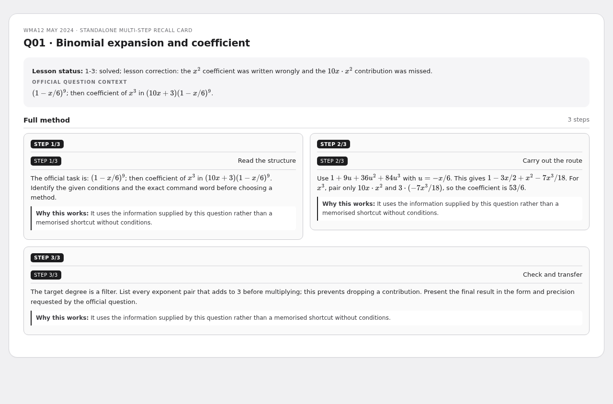
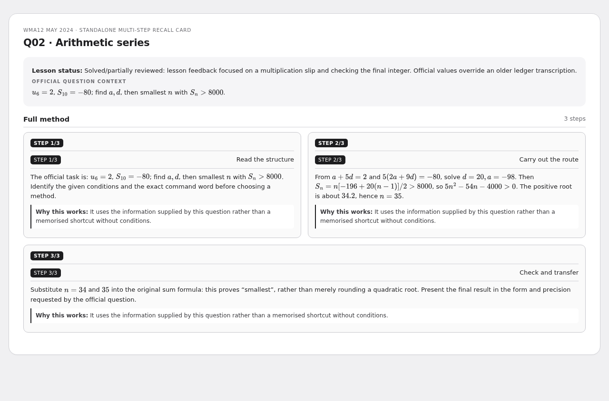
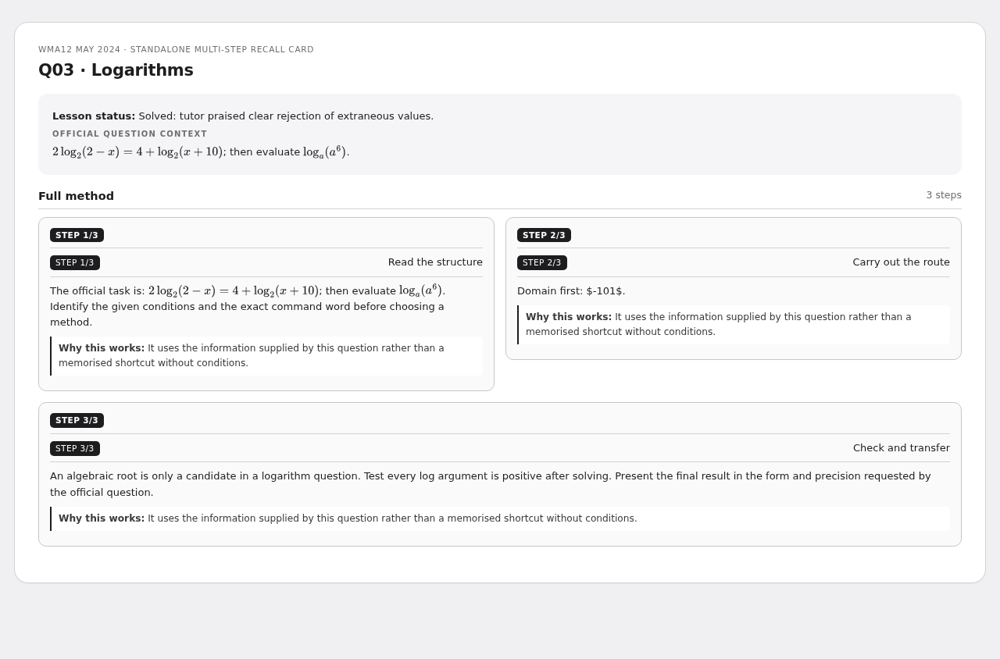
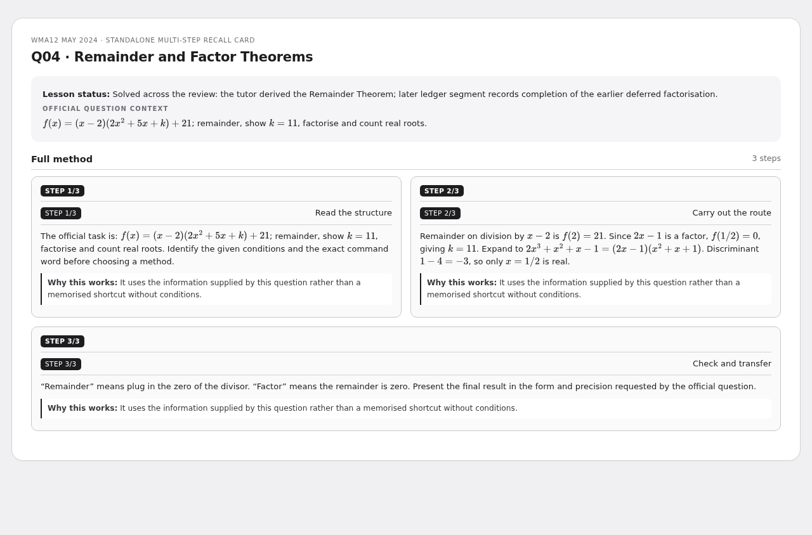
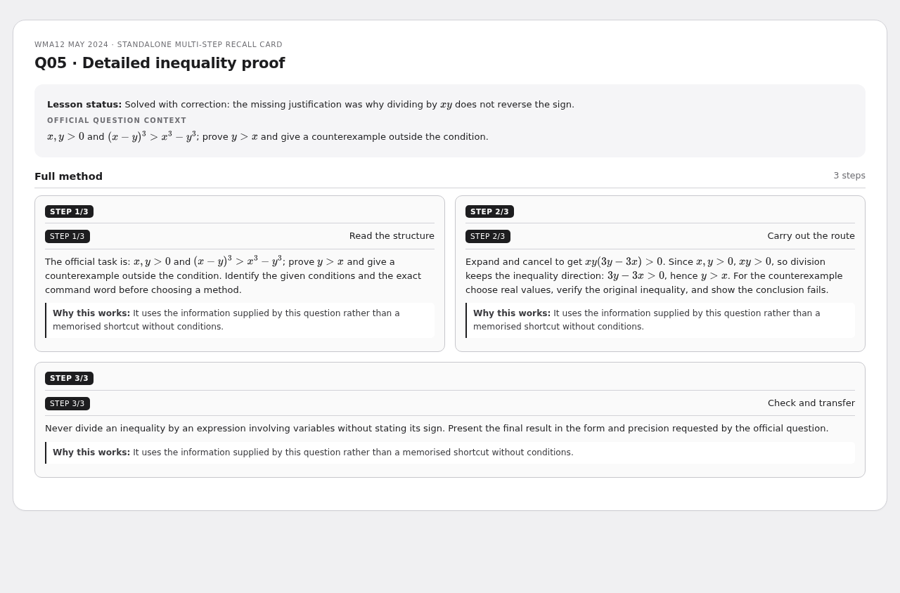
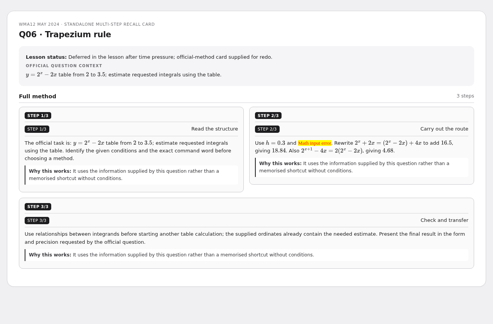
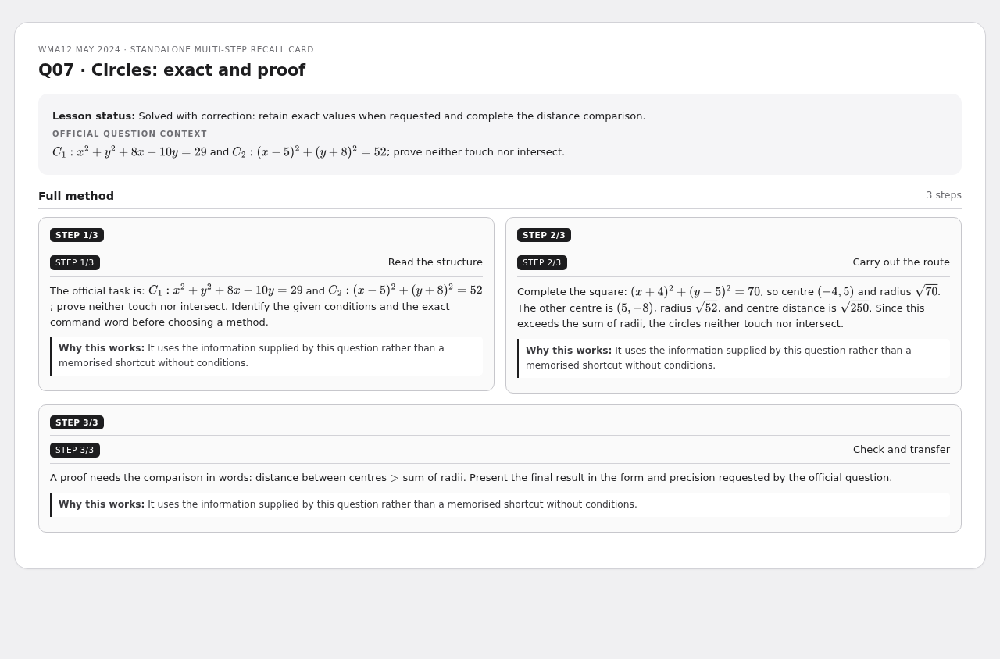
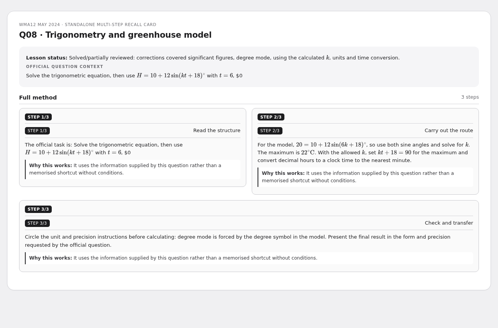
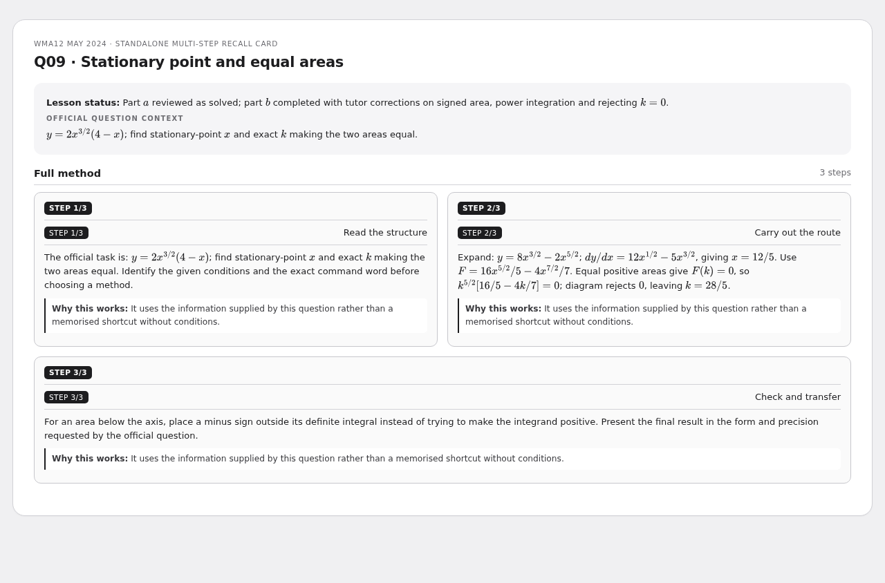
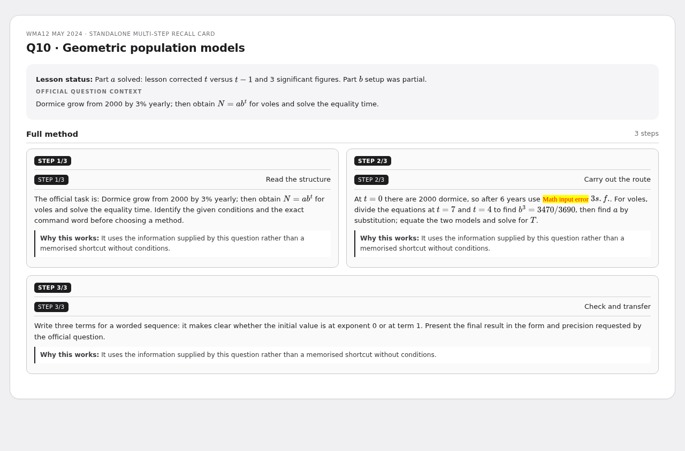

WMA12 May 2024 — multi-step recall cards
P2 past-paper review: question-by-question methods, with lesson-status boundaries and fully revealed PNG copies.
10 cardsP2 WMA12/01May 2024
Binomial expansion and coefficient
1-3: solved; lesson correction: the $x^2$ coefficient was written wrongly and the $10x\cdot x^2$ contribution was missed.
{kind=link}

Arithmetic series
Solved/partially reviewed: lesson feedback focused on a multiplication slip and checking the final integer. Official values override an older ledger transcription.
{kind=link}

Logarithms
Solved: tutor praised clear rejection of extraneous values.
{kind=link}

Remainder and Factor Theorems
Solved across the review: the tutor derived the Remainder Theorem; later ledger segment records completion of the earlier deferred factorisation.
{kind=link}

Detailed inequality proof
Solved with correction: the missing justification was why dividing by $xy$ does not reverse the sign.
{kind=link}

Trapezium rule
Deferred in the lesson after time pressure; official-method card supplied for redo.
{kind=link}

Circles: exact and proof
Solved with correction: retain exact values when requested and complete the distance comparison.
{kind=link}

Trigonometry and greenhouse model
Solved/partially reviewed: corrections covered significant figures, degree mode, using the calculated $k$, units and time conversion.
{kind=link}

Stationary point and equal areas
Part (a) reviewed as solved; part (b) completed with tutor corrections on signed area, power integration and rejecting $k=0$.
{kind=link}

Geometric population models
Part (a) solved: lesson corrected $t$ versus $t-1$ and 3 significant figures. Part (b) setup was partial.
{kind=link}
